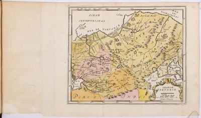

De Fer · 1690 · Munich

Explore the map in deep zoom
Great Tartary. By N. De Fer, by De Fer, 1690. Image: Munich. One of the 137 maps of Tartary in the TARTARY Project's collection at HKUST, catalogued on tartary.vercel.app. Its texts have not been transcribed yet.